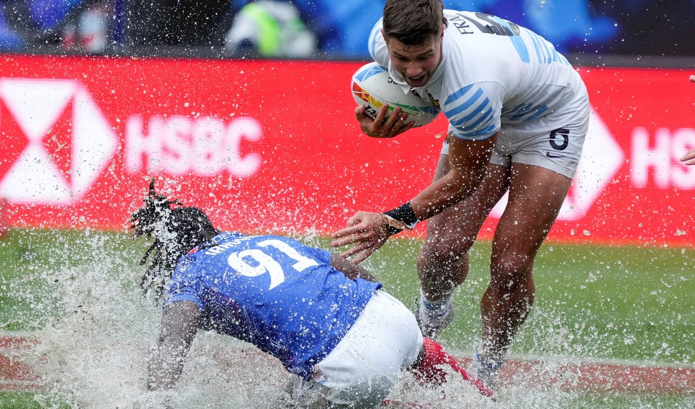

Los Pumas 7's van por todo en Los Angeles
El equipo seven argentino superó a Francia y España para meterse en cuartos de final, donde se cruzará ante Samoa.
El seleccionado argentino de rugby Seven, Los Pumas 7's, alcanzó los cuartos de final del torneo de Los Ángeles, en los Estados Unidos (décima etapa del circuito de la IRB), al derrotar en la medianoche del sábado a su par de España, por 19-7, en un partido válido por la última fecha del grupo D de la competencia.
En el estadio Dignity Health Sports Park de la ciudad de Carson, en el estado de California, el equipo dirigido por Santiago Gómez Cora -que durante enero ganó la etapa en Hamilton, Nueva Zelanda- culminó en la segunda posición de la zona, con dos triunfos (también venció a Francia por 17-12) y una derrota (en el comienzo con Gran Bretaña por 7-5). La jornada se vivió bajo el agua...
El representativo albiceleste sentenció su pasaje a cuartos con las conquistas conseguidas por Rodrigo Isgro, Alejo Lavayén y Luciano González, mientras Tobías Wade aportó dos conversiones. En el equipo español hubo un try de Eduardo López, apoyado por Juan Ramos.
La formación de Los Pumas 7's en el último encuentro de la etapa clasificatoria incluyó a Santiago Alvarez, Luciano González, Rodrigo Isgro, Matías Osadczuk, Marcos Moneta, Tobías Wade y Alejo Lavayén. También entraron Gastón Revol, Germán Schulz, Joaquín Pellandini, Mateo Graziano y Agustín Fraga.